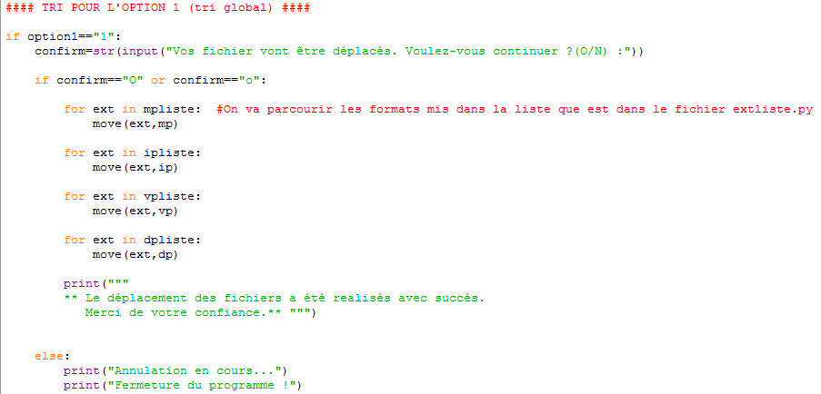
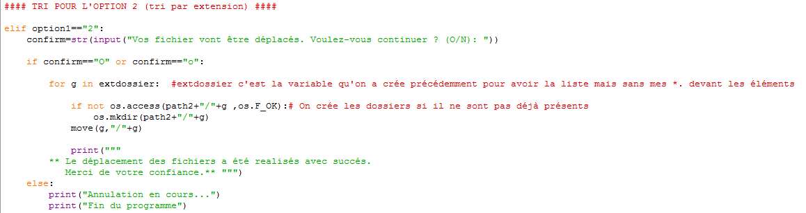

Mise en Place
Il est important de préciser qu'il y avait un projet avant celui-ci, étant trop dur à réaliser a cause de son code source non mis-à-jour, nous avons du abandonné l'idée.
Celui-ci consistait à gérer des actions d'un téléphone via des commandes Python, malgré l'acquisition des modules, ce projet était trop dur à réaliser.
Le nouveau projet nous est donc venu du fait que Lucien avait un problème pour ranger ses dossiers qui trainaient partout sur son ordinateur, sans jamais être rangé.
De cette idée, nous avons voulu tenté de ressoudre ce problème via Python, cela a donc servi de base à notre projet.
Trois modules sont utilisés pour permettre au programme de fonctionner :
- Shutil, servant à copier/coller/déplacer des dossiers
– Glob, permettant de trouver des noms précis
– Os, permettant de manipuler des chemins
Ces modules nous servent donc à pouvoir naviguer librement pour effectuer le trie désiré.
Il est important de savoir que le programme peut trier les disques durs, mais aussi les clés USB.
Grâce à ce programme, il est possible de créer autant de dossier possible avec un même nom, sinon un nouveau dossier sera automatiquement crée avec un numéro supplémentaire pour le différencier.
La première étape consiste donc tout simplement a initialiser quelques éléments comme par exemple la variable "p" qui va nous servir pour le nom des dossiers
dans lesquels vont aller nos fichiers ou encore les chemin d'accès de nos dossier de provenance des fichiers ( la où se trouve tout notre vrac de fichiers )
Le principe du programme est donc simple :
- On selectionne un dossier dans lequel se trouve notre vrac
- On selectionne ensuite un dossiers où vont apparaitre nos fichiers triés
- l'utilisateur a ensuite 3 options de tri qui sont donc :
- Tri par format
- Tri par extension seulement ( option la plus selective)
- Tri par type de fichier ( donc un tri par extension dans un tri selectif )
Voici donc à quoi ressemble (sur python) l'initialisation du programme :
Suite à ça on introduit une fonction nommée Pytri qui va prendre en argument : p, path et path2 ( p = variable qui servira de compteur pour le nom de nos futurs dossiers ),( path = chemin d'acces pour les fichiers en vrac )
et( path2 = le chemin d'accès pour la destination des fichiers triés )
la commande os.chdir issue du module 'OS' va dire a python que l'on va travailler dans le dossier renseigné( ici c'est path2 ).
puis on applique la commande python "global" à la variable "option1" qui va donc faire que la variable pourra être utilisée dans tout le programme ( on globalise la variable ).
On fait donc ensuite choisir à l'utilisateur par quelle option veut-il trier ses dossiers :
Ici on peut donc voir la bifurcation entre différentes issues de tri. (Nous avons decidé de nommer chacune des options par les étapes 2.2, 2.3, 2.4 )
Nous allons expliquer l'étape 2.2 en detail.
Donc on presente à l'utilisateur qu'il a choisi l'option 1 ( histoire de mettre des pauses dans le programme ) puison commence la boucle while.
Celle-ci dit : Tant que python a accès aux dossiers musiques, videos,etc <-- +str(p) ( str(p) car on a initialisé p à 0 donc si de tels dossiers existent il faut donc ajouter 1 à p pour ne pas se retrouver avec plusieurs fois le même dossier
Ensuite il est dit que si les dossiers cités ci-dessus existent, on demande à l'utilisateur si il veut créer de nouveaux dossiers ( on lui dit de repondre par (O/N) ) puis on rentre sa reponse dans la variable folder.
Si l'utilisateur veut créer de nouveaux fichiers, python va créer les dossiers cités +str(p), si il ne le veut pas, on crée tout simplement less dossiers sans numero.
Passons à l'étape 2.3 en detail.
Ici, on demande à l'utilisateur avec quel format(s) veut-t-il trier ses dossiers. Puis selon la(les) reponse(s) de l'utilisateur, python rentre cela dans une liste pour ensuite créer des dossiers du type mp3.
A ce niveau le tri n'a toujours pas eu lieu dans aucne des options, on prepare juste les conditions pour ensuite les appliquer au programme.
Passons ensuite à l'étape 2.4
On affiche toujours qu'elle option à choisi l'utilisateur, on globalise "option2" puis on demande ensuite a l'utilisateur par quel type il veut trier ses fichiers ( voir capture d'ecran ).
Puis en fonction de ce que l'utilisateur à choisi, on procède à la creation des dossiers. On execute ensuite la fonction pytrie
On retrouve ensuite la commande os.chdir qui va faire travailler python dans le dossier des fichiers en vrac.
C'est à partir d'ici que le déplacement de fichiers est enclanché :
On utilise la commande os.walk() qui permet de parcourir des dossiers recursivement, c'est à dire aller dans les sous-dossiers voir sous-sous-dossiers.
dans la boucle for, on parcourt l'élément files qui avait lui même parcouru os.walk().
Ensuite, Si la fin de l'élément relevé se termine par l'extension contenu dans la liste correspondant au format du fichier,
et ici le module shutil nous est utile pour On copie l'élément relevé (os.path.join est pour lier le fichier relever à son chemin).
Et le processus de tri est enclenché ! Voyons en détail comment se passe le tri pour chaque option.
OPTION 1 :

Si vous avez suivi tout du long, vous n'auriez aucun problème à comprendre cette partie là. Donc en resumé, chaque dossier (ip, mp, dp..) a sa liste d'extension dans un autre fichier python :

et donc python tri les fichiers par grâce aux extensions et les redistribuent dans leurs dossiers respectifs.
OPTION 2:
Pour l'option 2 le tri se fait grace, rappelez-vous à l'utilisateur qui choisi lui même ses extensions. Voyons comment se deroule le tri.

Ici la commande move() a le rôle de deplacement des fichiers. On commence d'abord par la boucle for, donc "g" va prendre toutes les valeurs presentes dans "extdossier" successivement puis on controle si
path2 + / + g n'existe pas déjà et si c'est le cas on créé le dossier de chemin path2+/+g. Ensuite on reutilise la commande move() pour deplacer les fichiers.
Voyons enfin le cas de l'OPTION 3:
Remarque : au debut de chaque tri on demande a l'utilisateur si il veut vraiment continuer par soucis de clareté dans notre programme.
Ici le principe est le même que dans les autres option sauf qu'ici Python ne va pas créer 4 dossiers comme d'habitude, ici il n'en crée qu'un seul selon le choix de l'utilisateur
donc selon le choix de type de fichiers fait, Python va prendre les valeurs de la liste correspondante au type de fichier et à l'aide d'une boucle for, parcourir la liste pour trouver
le bon format.
A la fin, le programme affiche a l'utilisateur que le deplacement à été bien executé.